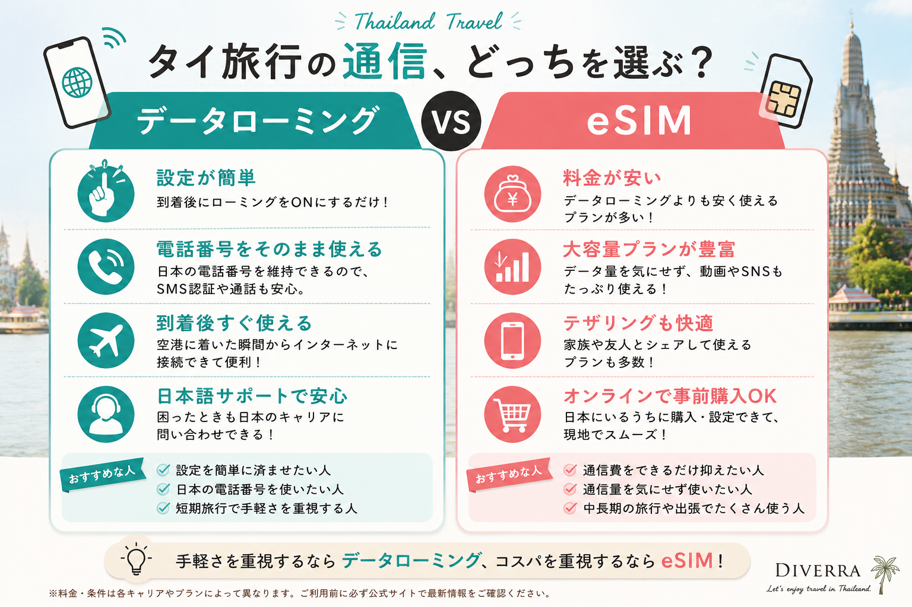
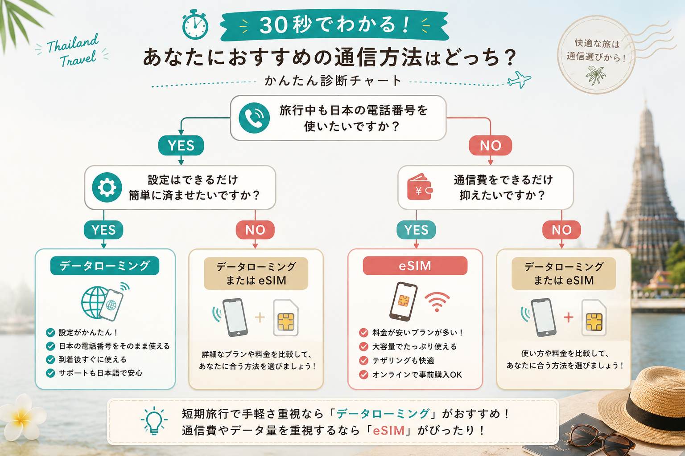
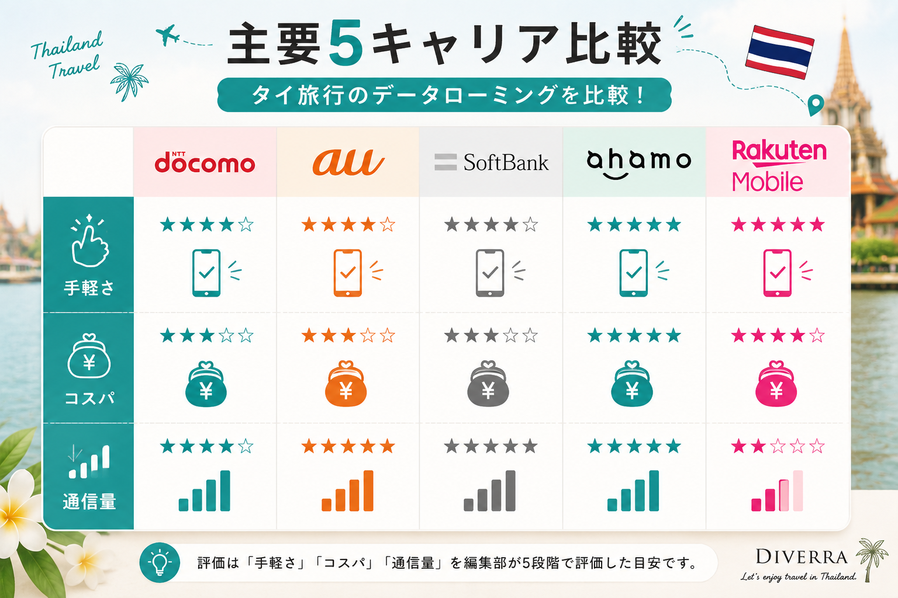
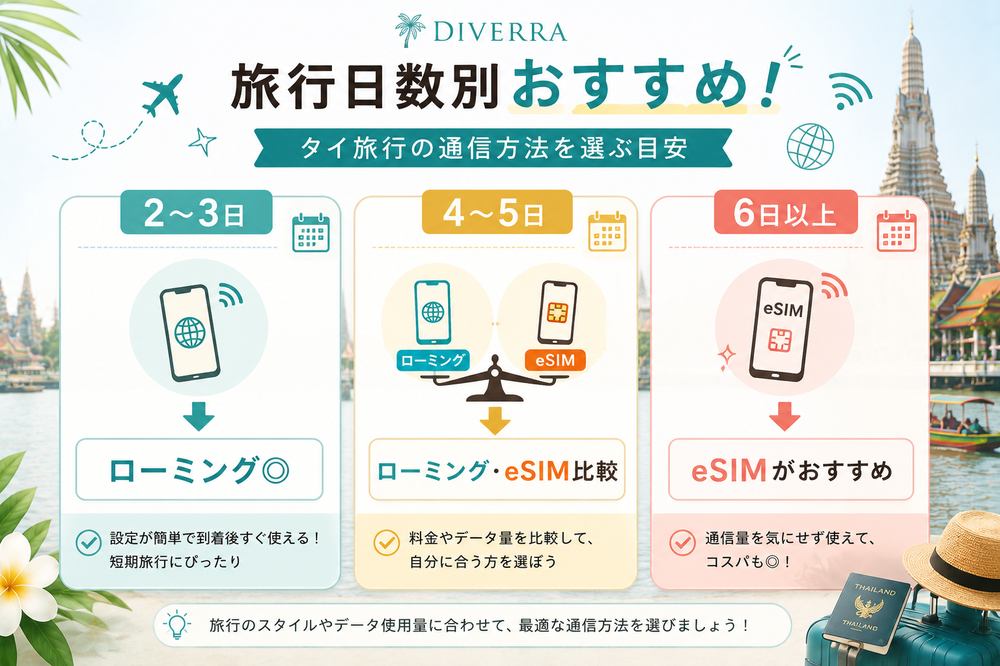
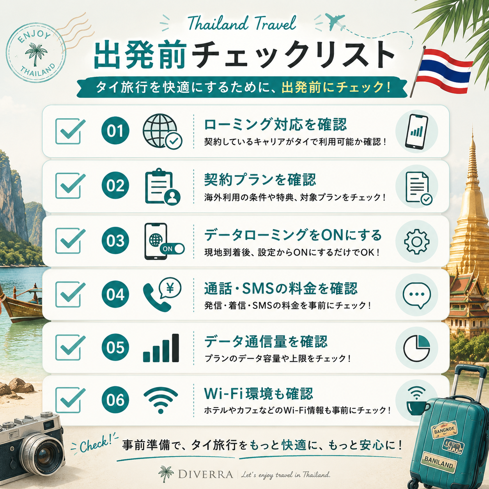

「タイでも、いつものスマホはそのまま使える？」
初めてタイへ旅行する人が意外と悩むのが、スマートフォンの通信方法です。
- データローミングをONにして大丈夫？
- 高額請求されない？
- eSIMの方がお得？
- 日本の電話番号はそのまま使える？
通信方法を決めずに出発すると、空港に着いた直後に地図が開けない、Grabを呼べない、同行者へ連絡できないといった問題が起こります。
一方、現在は各キャリアの海外向けサービスが充実しており、契約プランによっては追加料金なしで利用できる場合もあります。短期のタイ旅行なら、データローミングは十分便利な選択肢です。
この記事では、データローミングの基本、タイで使える主要5キャリア、eSIMとの違い、旅行日数別の選び方まで分かりやすく解説します。
結論｜2〜5日のタイ旅行なら、最初に契約中のキャリアを確認しよう
タイ旅行が2〜5日程度なら、最初に確認したいのは、現在契約している携帯会社の海外ローミングサービスです。
キャリアや契約プランによって、次のような違いがあります。
- 追加料金なしで使える
- 24時間単位の定額制
- データ使い放題
- 国内データ容量を海外でも使える
- 日本の電話番号を維持できる
旅行者向けおすすめ早見表
| あなたのタイプ | 向いている通信方法 |
|---|---|
| 設定を簡単に済ませたい | データローミング |
| 日本の電話番号を維持したい | データローミング |
| 通信費をできるだけ抑えたい | eSIMと比較 |
| 動画やSNSを多く使う | 大容量eSIMまたは使い放題型ローミング |
| 初めての海外旅行 | データローミング |
初めてタイへ行くなら、まず契約中のキャリアの海外特典を確認しましょう。追加料金なしの対象なら、新しいSIMカードやeSIMを準備しなくても、到着後すぐに通信できます。

データローミングとは？
データローミングとは、日本で契約している携帯会社が、海外の提携通信会社の回線を使ってインターネット通信を提供する仕組みです。
日本のSIMカードを抜かずに、タイでも通信できます。
例えばタイ到着後、通信がつながれば次のようなことができます。
- Grabを呼ぶ
- Googleマップを見る
- LINEで連絡する
- レストランや観光地を検索する
- 航空券やホテルの予約画面を確認する
データローミングのメリット
日本の電話番号を維持できる
SIMカードを交換しないため、日本で使っている電話番号をそのまま維持できます。SMS認証が必要なサービスを使う場合にも便利です。
ただし、海外での音声通話やSMS送信は、データ通信とは別料金になる場合があります。
到着後すぐに通信しやすい
空港でSIMカードを購入したり、eSIMを新しく開通したりする手間を減らせます。サービスによっては、現地でデータローミングをONにするだけで利用できます。
日本語のサポートを利用できる
通信トラブルが起きた場合、日本で契約している携帯会社へ相談できます。海外旅行に慣れていない人にとっては大きな安心材料です。
データローミングのデメリット
料金と条件が契約内容によって違う
同じキャリアでも、追加料金なしのプランと日額料金が発生するプランがあります。「同じキャリアだから無料」とは限りません。
音声通話とSMSは別料金になりやすい
データ通信が定額でも、発信・着信・SMS送信は別料金になる場合があります。通話を使う予定がある人は、データ料金だけでなく通話料金も確認しましょう。
国内のデータ容量を消費する場合がある
ahamoやドコモなど、一部のサービスでは国内利用分と海外利用分が同じデータ枠に含まれます。出発前に残り容量を確認しておくと安心です。
30秒で分かる｜あなたに合う通信方法診断

主要5キャリアを比較｜タイではどれが使いやすい？
ここからは、ドコモ、au、ソフトバンク、ahamo、楽天モバイルの5社を比較します。
料金や対象プランは変更される可能性があります。利用前には各社の公式サイトと契約者向け画面で最新条件を確認してください。
NTTドコモ
ドコモの代表的な海外サービスは「世界そのままギガ」です。タイは国・地域限定割の対象で、1時間、24時間、複数日から利用期間を選べます。
主な特徴
- 1時間200円
- 24時間980円
- 3日2,480円
- 5日3,980円
- 国内データ容量を使用
利用時間を細かく選べるため、短時間だけ通信したい人や、旅行日数に合わせて料金を決めたい人に向いています。
ドコモMAX、ドコモ ポイ活 MAXなど、対象プランでは追加料金なしの海外データ通信特典が付く場合があります。通常の「世界そのままギガ」と条件が異なるため、契約プラン名まで確認しましょう。
注意点
- 国内データ容量を消費する
- 月間利用量によって速度制限がある
- 音声通話とSMSは別料金
- 利用開始後は通信しなくても利用時間が進む
au
auでは「au海外放題」を利用できます。タイは予約割の対象で、事前予約なら800円／24時間、予約なしなら1,200円／24時間です。
主な特徴
- 事前予約：800円／24時間
- 予約なし：1,200円／24時間
- データ使い放題
- 1〜30日まで予約可能
2〜5日の短期旅行で、Googleマップ、SNS、動画などを容量を気にせず使いたいau利用者に向いています。
注意点
- 無料の「データチャージ」への加入が必要
- 予約変更・キャンセルには期限がある
- 音声通話とSMSは別料金
- 大量通信時に速度制限される可能性がある
ソフトバンク
ソフトバンクの主な選択肢は「海外あんしん定額」です。タイは定額国Lに含まれ、980円／24時間でデータ通信を利用できます。
主な特徴
- 980円／24時間
- データ使い放題
- 現地到着後にSMSのリンクから開始
- 対象料金プランには追加料金なしの「海外データ放題」が付く場合がある
契約プランによって、月3日、5日、1か月分など、追加料金なしで使える日数が異なります。
注意点
- 「世界対応ケータイ」などの適用状況を確認する
- 利用開始後はキャンセルできない
- 音声通話、SMS、国際SMSは対象外
- 契約プランによって特典内容が大きく異なる
ahamo
ahamoは、追加申込み不要でタイでもデータ通信を利用できます。現地で端末のデータローミングをONにするだけで使えるため、5社の中でも手続きが分かりやすいサービスです。
主な特徴
- 海外利用の追加料金なし
- 国内利用分と合算して月30GBまで
- 追加申込み不要
- テザリングにも対応
2〜5日の短期旅行なら、料金、容量、設定のバランスが良い選択肢です。
注意点
- 国内利用分と海外利用分が同じ30GB枠に含まれる
- 海外で最初に通信した日から15日経過後は速度制限
- 長期滞在では使い方に注意が必要
- 音声通話やSMSの料金は別に確認する
楽天モバイル
楽天モバイルは、毎月2GBまで海外ローミングを追加料金なしで利用できます。追加申込みは不要です。
主な特徴
- 月2GBまでプラン料金内
- 2GB超過後は最大128kbps
- 高速データは1GBあたり500円で追加可能
- Googleマップ、検索、LINE中心の利用に向く
ホテルのWi-Fiを併用し、外出中は地図やGrabを中心に使う人なら、2GB以内に収めやすいでしょう。
注意点
- 5社の中では追加料金なしの高速容量が少ない
- 動画視聴や大量の写真・動画投稿では超過しやすい
- 海外ローミング対応端末か確認が必要
- 出国前にRakuten Linkの認証を済ませておく
主要5キャリア比較表

| キャリア | 代表サービス | 3日間の目安 | 5日間の目安 | 特徴 |
|---|---|---|---|---|
| ドコモ | 世界そのままギガ | 2,480円 | 3,980円 | 時間・日数を細かく選べる |
| au | au海外放題 | 2,400円 | 4,000円 | 予約割で使い放題 |
| ソフトバンク | 海外あんしん定額 | 2,940円 | 4,900円 | 対象プランに無料特典あり |
| ahamo | 海外データ通信 | 追加料金なし | 追加料金なし | 月30GBまで |
| 楽天モバイル | 海外ローミング | 追加料金なし | 追加料金なし | 月2GBまで |
※ドコモ、au、ソフトバンクは通常の追加料金が発生する代表サービスで比較しています。契約中の国内プランに海外特典が付く場合、実際の負担額は変わります。
旅行スタイル別おすすめ
初めてのタイ旅行
設定に不安があるなら、契約中のキャリアのデータローミングが使いやすいでしょう。日本の電話番号を維持でき、困ったときに日本語サポートを利用できます。
とにかく通信費を抑えたい
ahamo利用者は月30GB、楽天モバイル利用者は月2GB以内なら、追加料金なしの海外利用が有力です。
それ以外のキャリアを利用している場合は、日額ローミングと旅行用eSIMの総額を比較しましょう。
Googleマップ・Grab・LINEが中心
楽天モバイルの2GBでも収まりやすい使い方です。ただし、写真や動画の自動バックアップ、SNSへの動画投稿を行うと、容量を消費しやすくなります。
動画・SNS・テザリングを多く使う
auの海外放題、ソフトバンクの定額サービス、または大容量eSIMが候補です。契約プランの無料特典がある場合は、先にローミング条件を確認してください。
データローミングとeSIM、結局どちらがおすすめ？
データローミングがおすすめな人
- 日本の電話番号を維持したい
- SIMカードを交換したくない
- eSIMの設定に不安がある
- 到着後すぐに通信したい
- 短期旅行で準備の手間を減らしたい
eSIMがおすすめな人
- 通信費を抑えたい
- 大容量プランを選びたい
- 動画やSNSを多く使う
- 旅行期間が長い
- 自分で回線設定を行える
「手軽さ」を優先するならデータローミング、「料金と容量」を優先するならeSIMという考え方が基本です。
旅行日数別のおすすめ

| 滞在日数 | 選び方 |
|---|---|
| 2〜3日 | ローミングを優先して確認 |
| 4〜5日 | ローミングとeSIMの総額を比較 |
| 6日以上 | eSIMも有力。長期制限にも注意 |
ただし、ahamoや楽天モバイルのように追加料金なしで利用できる場合、滞在日数だけを理由にeSIMへ変更する必要はありません。
タイ旅行前チェックリスト

- ローミング対応国にタイが含まれているか
- 契約プランの海外特典
- データローミングをONにするタイミング
- 海外での通話・SMS料金
- 利用可能なデータ容量
- ホテルや空港のWi-Fi情報
特にauやソフトバンクは、事前設定や対象サービスの確認が必要です。出発当日ではなく、数日前までに確認しておきましょう。
よくある質問
タイでデータローミングをONにすると高額請求されますか？
定額サービスや海外特典が正しく適用されていれば、データ通信の料金は管理しやすくなっています。
ただし、対象サービスを開始せずに通信した場合や、音声通話・SMSを利用した場合は別料金が発生する可能性があります。出発前に利用条件を確認してください。
日本の電話番号は使えますか？
日本のSIMを入れたまま利用するため、電話番号は維持できます。
ただし、海外での通話やSMSには別料金がかかる場合があります。連絡はLINEなどのデータ通信アプリを中心にすると、通話料金を抑えやすくなります。
GrabやGoogleマップは使えますか？
データ通信がつながれば基本的に利用できます。空港からホテルへ移動するときにGrabを使う予定なら、到着前にアプリへのログインと支払い方法の登録を済ませておくと安心です。
データローミングはいつONにすればいいですか？
原則として、利用するサービスの準備を日本で済ませ、タイ到着後にデータローミングをONにします。
キャリアによってはアプリでの事前予約や、現地SMSからの利用開始操作が必要です。各社の手順を確認してください。
無料ローミングなら完全に料金はかかりませんか？
「追加料金なし」は、海外データ通信が国内プラン料金に含まれるという意味です。
国内プラン料金、端末代、海外での音声通話、SMSなどまで無料になるわけではありません。
DIVERRA編集部レビュー｜2026年9月更新予定
DIVERRAでは、2026年9月のタイ旅行で次の2回線を実際に使用し、通信状況を検証する予定です。
- 筆者：ソフトバンク
- 同行者：ahamo
旅行後は、次の項目を追記します。
- スワンナプーム空港到着直後の接続
- BTS・MRTでの通信状況
- Grabの利用しやすさ
- Googleマップの表示速度
- ホテルや商業施設での通信品質
- テザリングの使い勝手
- バッテリー消費
- 実際に発生した料金
現時点では各社の公式情報を基に解説しています。実際の使用結果を加え、タイ旅行者がより判断しやすい記事へ更新します。
まとめ
タイでは、ドコモ、au、ソフトバンク、ahamo、楽天モバイルのいずれもデータローミングを利用できます。
ただし、最適な方法は契約中のキャリアと料金プランによって変わります。
- ahamoは月30GBまで追加料金なし
- 楽天モバイルは月2GBまで追加料金なし
- auは事前予約で800円／24時間の使い放題
- ドコモは利用時間や日数を細かく選べる
- ソフトバンクは対象プランの海外特典を確認する
まずは契約中のキャリアの海外特典を確認し、対象外の場合に日額ローミングと旅行用eSIMを比較するのが効率的です。
手軽さを重視するならデータローミング、料金や容量を重視するならeSIM。
出発前に設定と料金を確認し、タイ到着後すぐにスマートフォンを使える状態にしておきましょう。